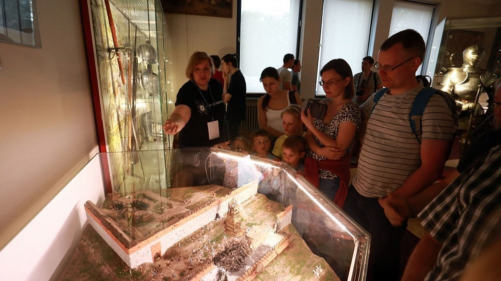
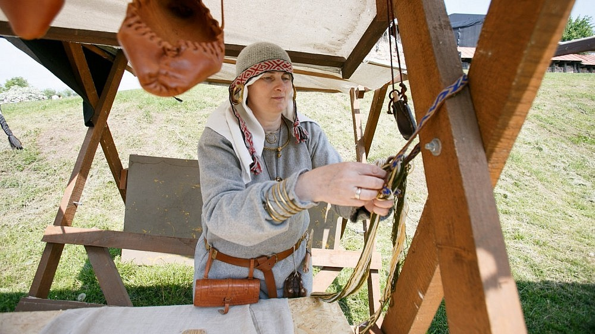
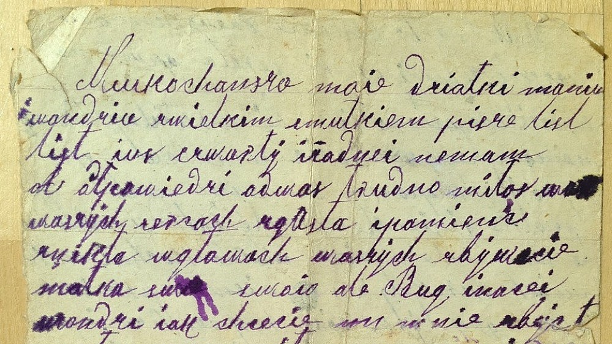
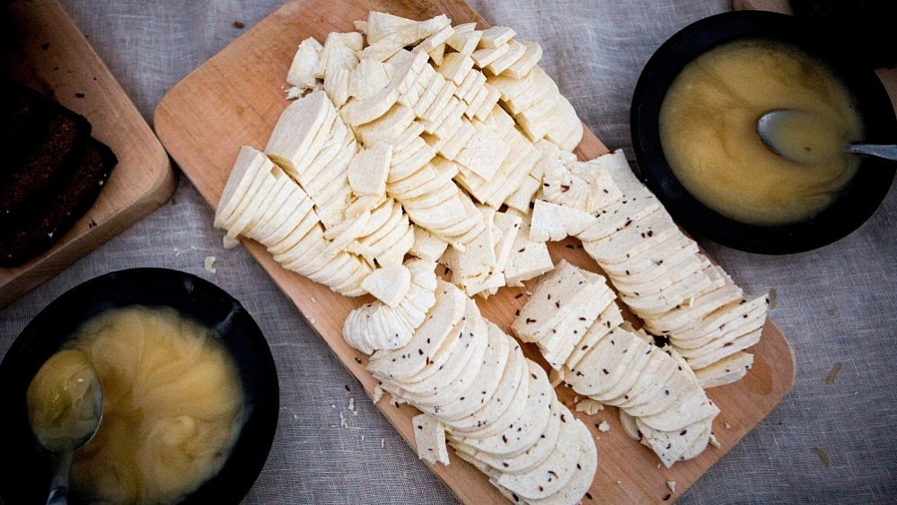

Naujame Oskarui nominuoto režisieriaus Wimo Wenderso dokumentiniame filme Popiežius Pranciškus prieš kamerą pasakos apie savo mintis, Kanų kino festivalyje pranešė jo rėmėjai.
Filme „Žmogus, besilaikantis žodžio“ iš Argentinos kilęs pontifikas atsakinės į klausimus iš viso pasaulio, o JAV prodiuserių bendrovė „Focus Features“ filmą vadina „pirmuoju, kuriame popiežius kreipsis tiesiai į žiūrovus ir kalbės įvairiomis temomis, pavyzdžiui, apie ekologiją, imigraciją, vartotojiškumą ir socialinį teisingumą“.
Šiandien, minint Tarptautinę muziejų dieną, prie visoje Europoje vykstančios Muziejų nakties akcijos jau 12-us metus prisideda ir Lietuva – 30 Lietuvos miestų ir miestelių lankytojams iki vidurnakčio duris nemokamai atvėrė galerijos, muziejai, memorialiniai butai.
 Tradiciškai laivybos sezono pradžią Klaipėda pasitinka laivų paradu, tačiau šiemet jų – net du: vienas vykęs dieną, o kitas – vakare.
Tradiciškai laivybos sezono pradžią Klaipėda pasitinka laivų paradu, tačiau šiemet jų – net du: vienas vykęs dieną, o kitas – vakare.
Kauniečiai švenčia miesto gimtadienį ir tradicines Hanzos dienas. Organizatoriai siūlo įvairių pramogų – koncertų, akcijų ir žaidimų, o prie Kauno pilies baigtas statyti naujas, tūkstantį žmonių talpinantis amfiteatras.
Lietuvos gyventojų tremtis po 1940 metų paliko skaudžių pėdsakų daugelyje šeimų, šiandien gyvenančių ne tik Lietuvoje, bet ir svetur. Išreikšti ir įveikti traumines patirtis, atgaivinti istorinę atmintį padeda menas. Gegužės 22 d. Vilniaus lenkų kultūros namuose rengiamas ypatingas vakaras, kuriame bus skaitomi vienos iš tūkstančių 1940 m. ištremtųjų, vilnietės Jozefos Bujdo laiškai.
Lietuvos paštas tęsia pašto ženklų serijos „Kulinarinis paveldas“ leidybą. Šeštadienį apyvartoje pasirodančiame šalies tradicinę virtuvę reprezentuojančiame pašto ženkle pavaizduotas užsienio svečių už išskirtinį skonį ir unikalų gamybos procesą itin vertinamas varškės sūris.